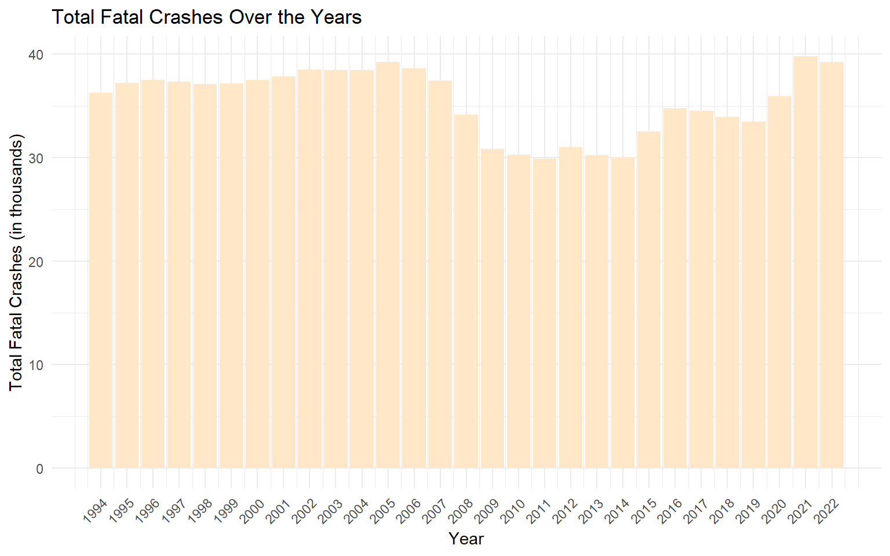
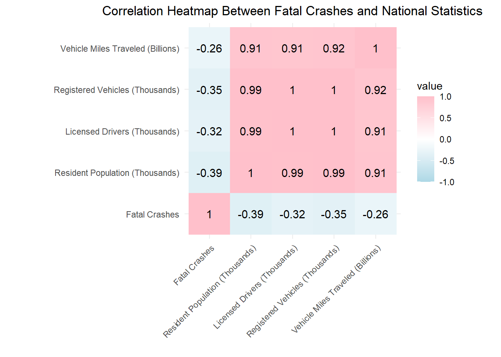
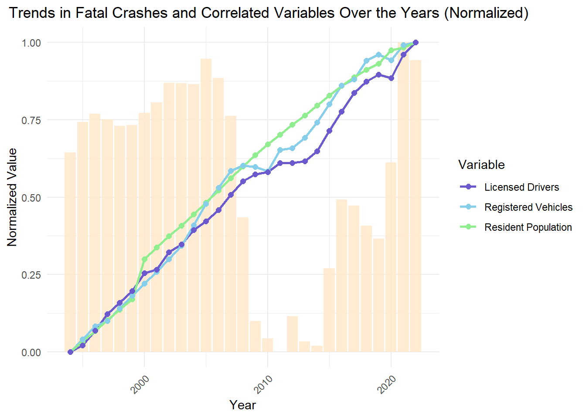
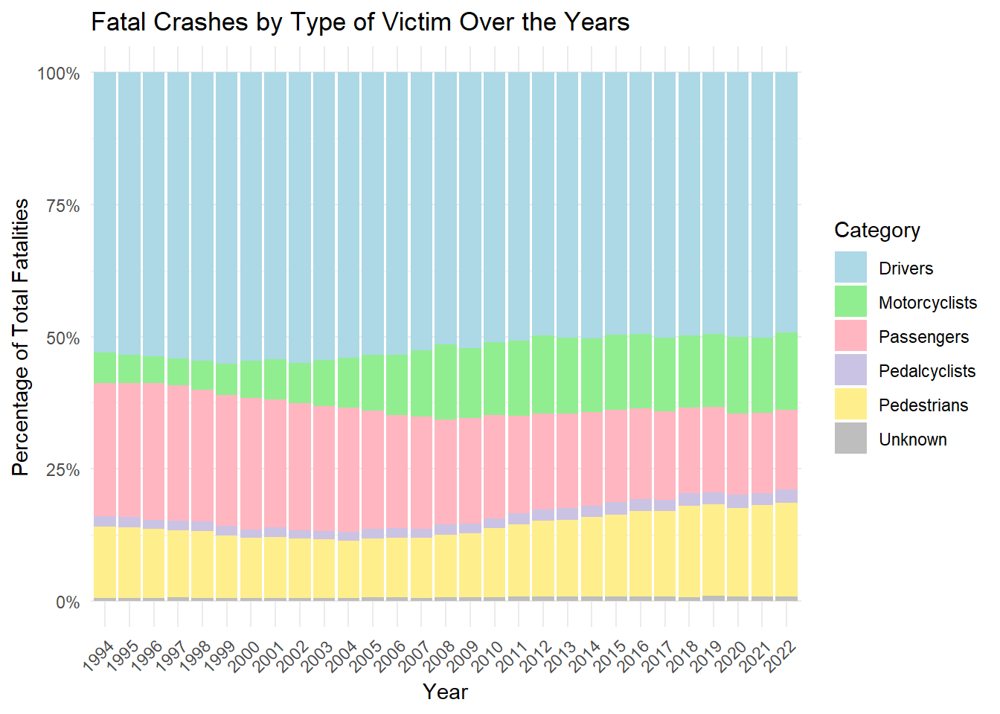
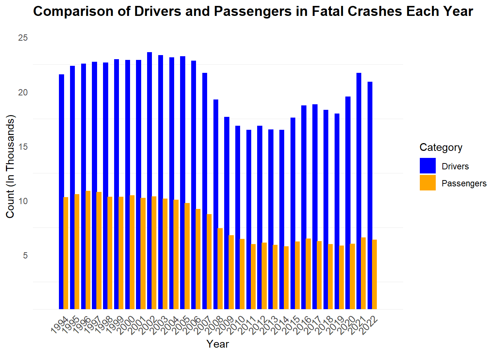
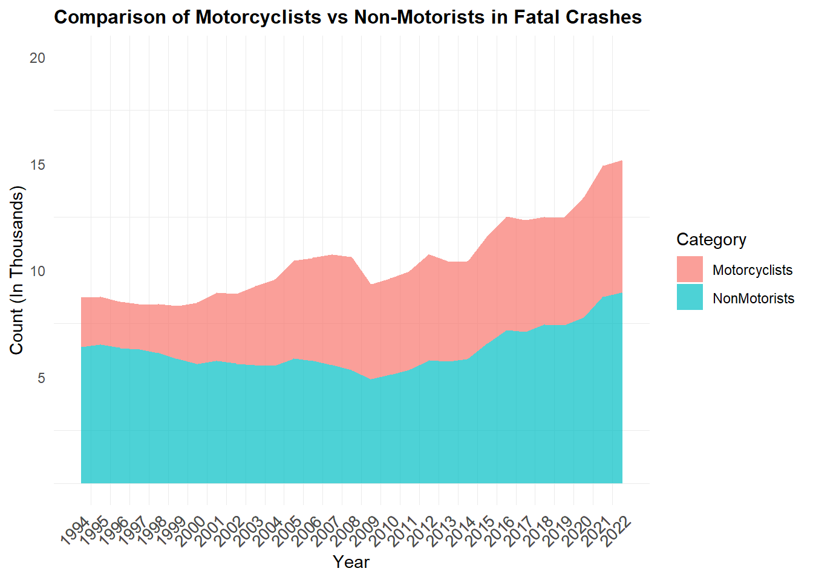
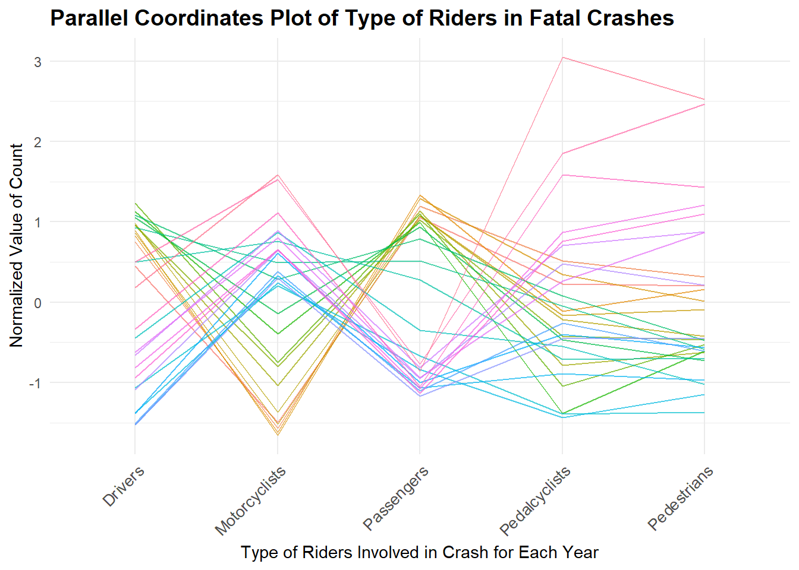
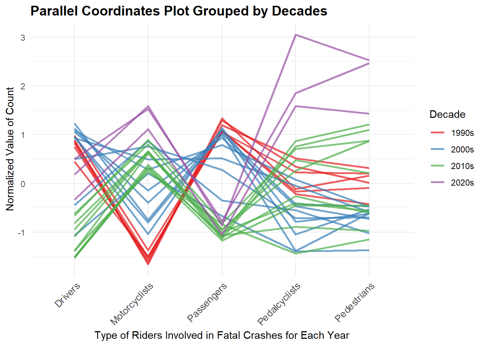

3.1 Looking at how the number of total fatal crashes as changed over the years…
Code
suppressPackageStartupMessages({library(ggplot2)library(corrplot)library(readr)library(dplyr)library(GGally)library(tidyr)})data <-suppressMessages(read_csv("C:/Users/prish/OneDrive/Desktop/EDAV/Traffic-Safety/Data/vehicle_crash_data_cleaned.csv"))ggplot(data, aes(x = Year, y =`Fatal Crashes`/1000)) +geom_bar(stat ="identity", fill ="#FFE7C7") +labs(title ="Total Fatal Crashes Over the Years",x ="Year", y ="Total Fatal Crashes (in thousands)") +theme_minimal() +theme(axis.text.x =element_text(angle =45, hjust =1)) +scale_x_continuous(breaks = data$Year)

From the above barplot, we see that the number of fatal crashes in the United States has not been constant in the years 1994-2022. Although the number is constant till year 2007. There is a drastic decrease till 2009. Then, once again, the number of fatal crashes is constant till 2014. However, after that, we see an increase in fatal crashes till 2022. In later graphs, we can delve more into finding possible reasons for this decrease and then increase.
3.2 Looking at the correlation relationships between fatal crashes and national statistics…
Code
cor_data <- data %>%select(`Fatal Crashes`, `Resident Population (Thousands)`, `Licensed Drivers (Thousands)`, `Registered Vehicles (Thousands)`, `Vehicle Miles Traveled (Billions)`)cor_matrix <-cor(cor_data, use ="complete.obs")cor_long <-as.data.frame(as.table(cor_matrix)) %>%rename(Var1 = Var1, Var2 = Var2, value = Freq)ggplot(cor_long, aes(Var1, Var2, fill = value)) +geom_tile() +geom_text(aes(label =round(value, 2)), size =4, color ="black") +# Add correlation valuesscale_fill_gradient2(low ="lightblue", high ="pink", mid ="white", midpoint =0, limits =c(-1, 1)) +theme_minimal() +theme(axis.text.x =element_text(angle =45, hjust =1),plot.title =element_text(hjust =0.5)) +labs(title ="Correlation Heatmap Between Fatal Crashes and National Statistics", x ="", y ="") +coord_fixed(ratio =1)

In order to identify what factors could be changing the number of fatal crashes, we looked at the correlation between fatal crashes and resident population, number of licensed drivers, number of registered vehicles, and vehicle miles traveled. We found that all these factors are correlated with fatal crashes but negatively correlated. The correlation, however, is not very strong. From the above heatmap, we can see fatal crashes is most correlated with resident population and least correlated with vehicle miles traveled.
3.3 Confirming whether any of the top 3 most correlated factors could explain the changes in total fatal crashes over the years…
Code
data_normalized <- data %>%mutate(across(c(`Fatal Crashes`, `Resident Population (Thousands)`, `Registered Vehicles (Thousands)`, `Licensed Drivers (Thousands)`),~ (. -min(.)) / (max(.) -min(.)),.names ="norm_{col}" ))data_long <- data_normalized %>%select(Year, starts_with("norm_")) %>%pivot_longer(cols =-Year, names_to ="Variable", values_to ="Value") %>%mutate(Variable =recode(Variable,"norm_Fatal Crashes"="Fatal Crashes","norm_Resident Population (Thousands)"="Resident Population","norm_Registered Vehicles (Thousands)"="Registered Vehicles","norm_Licensed Drivers (Thousands)"="Licensed Drivers"))ggplot() +geom_bar(data =filter(data_long, Variable =="Fatal Crashes"), aes(x = Year, y = Value), stat ="identity", fill ="#FFE7C7", alpha =0.8) +geom_line(data =filter(data_long, Variable !="Fatal Crashes"), aes(x = Year, y = Value, color = Variable, group = Variable), size =1) +geom_point(data =filter(data_long, Variable !="Fatal Crashes"), aes(x = Year, y = Value, color = Variable), size =2) +labs(title ="Trends in Fatal Crashes and Correlated Variables Over the Years (Normalized)",x ="Year",y ="Normalized Value",color ="Variable" ) +theme_minimal() +theme(axis.text.x =element_text(angle =45, hjust =1),plot.title =element_text(hjust =0.3) ) +scale_color_manual(values =c("Resident Population"="lightgreen","Registered Vehicles"="skyblue","Licensed Drivers"="#6A5ACD" ))

From the above plot, we can see that there is a dip in registered vehicles and resident population where there is a decrease in total fatal crashes. However, the dip is not as drastic as the change in total fatal crashes. Thus, it is hard to confirm whether those variables could be the only reason for the changes in total fatal crashes.
3.4 Looking at the distribution of type of victims in fatal crahses over the years
Code
data <- data %>%mutate(Unknown =`Unknown`+`Other/ Unknown`) %>%select(-`Other/ Unknown`) data_long <- data %>%select(Year, Drivers, Passengers, Motorcyclists, Pedestrians, Pedalcyclists, Unknown) %>%gather(key ="Category", value ="Count", -Year)data_long <- data_long %>%group_by(Year) %>%mutate(Percent = Count /sum(Count)) %>%ungroup()ggplot(data_long, aes(x =factor(Year), y = Percent, fill = Category)) +geom_bar(stat ="identity") +labs(title ="Fatal Crashes by Type of Victim Over the Years",x ="Year", y ="Percentage of Total Fatalities") +scale_fill_manual(values =c("Drivers"="lightblue", "Passengers"="lightpink", "Motorcyclists"="lightgreen", "Pedestrians"="#FFEE8C","Pedalcyclists"="#CBC3E3", "Unknown"="gray")) +theme_minimal() +theme(axis.text.x =element_text(angle =45, hjust =1)) +scale_y_continuous(labels = scales::percent)

From the aboved stacked bar plot, we found that the majority of victims in fatal crashes are the drivers. This has stayed pretty constant over the years. On the other hand, the percentage of passengers killed has decreased over the years. This could be the result of improved safety features in cars for passengers. The percentage of motorcyclists has increased over the years. This could be due to a increase in popularity of motorcycles over the years and may call for additional policies or safety features for motorcyclists.
3.5 Comparing number of drivers and passengers invovled in crashes over the years
Code
cleaned_file_path <-"C:/Users/prish/OneDrive/Desktop/EDAV/Traffic-Safety/Data/vehicle_crash_data_cleaned.csv"vehicle_crash_data_cleaned <-read.csv(cleaned_file_path)# Filtering relevant columns for the plot and arrange datadrivers_passengers_data <- vehicle_crash_data_cleaned |>select(Year, Drivers, Passengers) |>arrange(desc(Year)) # Converting data to long format for ggplotdrivers_passengers_long <- drivers_passengers_data |>pivot_longer(cols =c(Drivers, Passengers),names_to ="Category",values_to ="Count" )# Creating grouped bar chartggplot(drivers_passengers_long, aes(x =as.factor(Year), y = Count/1000, fill = Category)) +geom_bar(stat ="identity", position =position_dodge(width =0.8)) +# Drivers and Passengers groupedscale_fill_manual(values =c("Drivers"="blue", "Passengers"="orange")) +labs(title ="Comparison of Drivers and Passengers in Fatal Crashes Each Year",x ="Year",y ="Count (In Thousands)",fill ="Category" ) +theme_minimal() +theme(axis.text.x =element_text(size =10, angle =45, hjust =1), # Rotating x-axis labels for readabilityplot.title =element_text(size =14, face ="bold"),panel.grid.major.x =element_blank(), panel.grid.major.y =element_blank() ) +scale_x_discrete(expand =expansion(mult =c(0.1, 0.1))) +# Adding gaps between years for readabilityscale_y_continuous(limits =c(0, 25),breaks =c(5, 10, 15, 20, 25),expand =expansion(mult =c(0, 0.05)) )

From the above histogram, we observe that the number of both drivers and passengers involved in vehicle crashes follow a similar pattern. From year 2006 upto 2014, the number of drivers and passengers gradually decreases. After 2014, the number of drivers involved in vehicle crashes increases steadily, whereas the number for passengers increases faintly. The data distribution for drivers is bimodal with two peaks corresponding to years 2002 and 2021. For passengers, it is unimodal with roghly positively skewed. Further, there are no significant outliers in the data distribution above. The above graph omits the count of “Unknown” since the count for that category is small compared to passengers and drivers.
One more key oberservation is that for all years, the number of drivers involved in vehicle crash is higher than the number of passengers involved in a crash. This poses a possible research question if people are more likely to drive recklessly alone than with passengers in their car.
3.6 Comparing number of motorcyclists vs nonmotorists involved in fatal crashes…
Code
# Selecting relevant columns and arranging datamotorcyclists_non_motorists <- vehicle_crash_data_cleaned |>select(Year, Motorcyclists, Sub.Total2) |>rename(NonMotorists = Sub.Total2) |>arrange(Year)# Converting data to long format for ggplotmotorcyclists_long <- motorcyclists_non_motorists |>pivot_longer(cols =c(Motorcyclists, NonMotorists),names_to ="Category",values_to ="Count" )ggplot(motorcyclists_long, aes(x = Year, y = Count/1000, fill = Category)) +geom_area(alpha =0.7) +labs(title ="Comparison of Motorcyclists vs Non-Motorists in Fatal Crashes",x ="Year",y ="Count (In Thousands)",fill ="Category" ) +scale_x_continuous(breaks = motorcyclists_long$Year) +scale_y_continuous(limits =c(0, 20), breaks =c(5, 10, 15, 20), #expand = expansion(mult = c(0, 0.05)) ) +theme_minimal() +theme(axis.text.x =element_text(size =10, angle =45, hjust =1), plot.title =element_text(size =12, face ="bold"),panel.grid.major =element_blank() )

From the above chart, we can see that the number of both non-motorists (pedestrians and pedalcyclists) and motorists increases roughly with the same rate with year. This denotes the possibility of multicollinearity, where any two variables in a dataset are highly correlated with each other. Therefore, this information can be taken into account for predictive analytics, machine learning or model training work in the future.
4 Looking at Type of Riders involved in a Crash
Code
# Select relevant columns and normalize the data for plottingparallel_data <- vehicle_crash_data_cleaned |>select(Year, Drivers, Passengers, Motorcyclists, Pedestrians, Pedalcyclists) |>mutate(across(where(is.numeric), scale)) # Normalize numerical columns# Convert data to long formatparallel_long <- parallel_data |>pivot_longer(cols =-Year, names_to ="Variable",values_to ="Value" )ggplot(parallel_long, aes(x = Variable, y = Value, group = Year, color =as.factor(Year))) +geom_line(alpha =0.7) +labs(title ="Parallel Coordinates Plot of Type of Riders in Fatal Crashes",x ="Type of Riders Involved in Crash for Each Year",y ="Normalized Value of Count",color ="Year" ) +theme_minimal() +theme(axis.text.x =element_text(size =10, angle =45, hjust =1), plot.title =element_text(size =14, face ="bold"),legend.position ="none" )

From the above Parallel Coordinates Plot, we can see that there is a sharp increase in the number of pedalcyclists who were involved in a fatal crash for a particular year. Further, pedalcyclists and pedestrians (non-motorcyclists) have lower numbers in general compared other rider types involved in fatal crashes.
5 Looking at Type of Riders Grouped by Decades
Code
# Add a new column to group data by decadesparallel_data_decades <- vehicle_crash_data_cleaned |>select(Year, Drivers, Passengers, Motorcyclists, Pedestrians, Pedalcyclists) |>mutate(Decade =floor(Year /10) *10, # Group by decadesDecade =paste0(Decade, "s") # Format as "1990s", "2000s", etc. ) |>mutate(across(where(is.numeric), scale)) # Normalize data# Convert data to long format for plottingparallel_long_decades <- parallel_data_decades |>pivot_longer(cols =-c(Year, Decade),names_to ="Variable",values_to ="NormalizedValue" )# Create the parallel coordinates plot grouped by decadesggplot(parallel_long_decades, aes(x = Variable, y = NormalizedValue, group = Year, color = Decade)) +geom_line(alpha =0.7, size =1) +scale_color_brewer(palette ="Set1") +# Add distinct colors for decadeslabs(title ="Parallel Coordinates Plot Grouped by Decades",x ="Type of Riders Involved in Fatal Crashes for Each Year",y ="Normalized Value of Count",color ="Decade" ) +theme_minimal() +theme(axis.text.x =element_text(size =10, angle =45, hjust =1), # Rotate x-axis labels for readabilityplot.title =element_text(size =14, face ="bold") )

From the above Parallel Coordinaes Plot which is grouped by decades, we observe the following:
The outlier for pedalcyclists corresponds to the decade starting with year 2020. This poses a question of whether that year was 2020, or if COVID-19 had any affect on the number of fatalities involving a significant number of pedalcyclists.
For decades of 1990s and 2000s, the number of fatalities involving drivers and passengers were higher than average compared to the decades of 2010s and 2020s. This denotes that with an increase in the number of people driving cars with time, rules and regulations around driving were gearing up.
There is a clear increase in fatalities involving motorcyclists in the recent years starting from early 2010. This poses another question if rules around riding motorcycles need to be stricter in the U.S.